산업안전기사 (2016-05-08 기출문제)
1과목: 안전관리론
1. 안전에 관한 기본 방침을 명확하게 해야 할 임무는 누구에게 있는가?
- 안전관리자
- 관리감독자
- 근로자
- 사업주
(정답률: 82%)

2. 학습지도의 형태 중 토의법에 해당되지 않는 것은?
- 패널 디스커션(panel discussion)
- 포럼(forum)
- 구안법(project method)
- 버즈 세션(buzz session)
(정답률: 89%)
3. 매슬로우의 욕구단계이론에서 편견없이 받아들이는 성향, 타인과의 거리를 유지하며 사생활을 즐기거나 창의적 성격으로 봉사, 특별히 좋아하는 사람과 긴밀한 관계를 유지하려는 인간의 욕구에 해당하는 것은?
- 생리적 욕구
- 사회적 욕구
- 자아실현의 욕구
- 안전에 대한 욕구
(정답률: 66%)
4. 산업안전보건법상 중대재해에 해당하지 않는 것은?
- 사망자가 2명 발생한 재해
- 6개월 요양을 요하는 부상자가 동시에 4명 발생한 재해
- 부상자 또는 직업성 직업성 질병자가 동시에 12명 발생한 재해
- 3개월 요양을 요하는 부상자가 1명, 2개월 요양을 요하는 부상자가 4명 발생한 재해
(정답률: 84%)
5. 고무제 안전화의 구비조건이 아닌 것은?
- 유해한 흠, 균열, 기포, 이물질 등이 없어야 한다.
- 바닥, 발등, 발 뒤꿈치 등의 접착부분에 물이 들어오지 않아야 한다.
- 에나멜 도포는 벗겨져야 하며, 건조가 완전하여야 한다.
- 완성품의 성능은 압박감, 충격 등의 성능시험에 합격하여야 한다.
(정답률: 92%)
6. 다음 중 학습정도(Level of learning)의 4단계를 순서대로 옳게 나열한 것은?
- 이해 → 적용 → 인지 → 지각
- 인지 → 지각 → 이해 → 적용
- 지각 → 인지 → 적용 → 이해
- 적용 → 인지 → 지각 → 이해
(정답률: 77%)
7. 인간의 동작특성 중 판단과정의 착오요인이 아닌 것은?
- 합리화
- 정서불안정
- 작업조건불량
- 정보부족
(정답률: 52%)
8. 무재해 운동의 3원칙에 해당되지 않는 것은?
- 무의 원칙
- 참가의 원칙
- 대책선정의 원칙
- 선취의 원칙
(정답률: 80%)
9. 리더쉽의 유형에 해당되지 않는 것은?(오류 신고가 접수된 문제입니다. 반드시 정답과 해설을 확인하시기 바랍니다.)
- 권위형
- 민주형
- 자유방임형
- 혼합형
(정답률: 58%)
10. A 사업장의 연천인율이 10.8 인 경우 이 사업장의 도수율은 약 얼마인가?
- 5.4
- 4.5
- 3.7
- 1.8
(정답률: 75%)
11. 안전표시의 종류와 분류가 올바르게 연결된 것은?
- 금연 - 금지표지
- 낙화물 경고 - 지시표지
- 안전모 착용 - 안내표지
- 세안장치 - 경고표지
(정답률: 87%)
12. 시몬즈(Simonds)의 재해코스트 산출방식에서 A, B, C, D는 무엇을 뜻하는가?
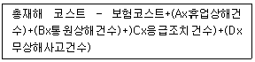
- 직접손실비
- 간접손실비
- 보험 코스트
- 비보험 코스트 평균치
(정답률: 76%)
13. 데이비스(K. Davis)의 동기부여이론 등식으로 옳은 것은?
- 지식 × 기능 = 태도
- 지식 × 상황 = 동기유발
- 능력 × 상황 = 인간의 성과
- 능력 × 동기유발 = 인간의 성과
(정답률: 75%)
14. 직계=참모식 조직의 특징에 대한 설명으로 옳은 것은?
- 소규모 사업장에 적합하다.
- 생산조직과는 별도의 조직과 기능을 갖고 활동한다.
- 안전계획, 평가 및 조사는 스탭에서, 생산기술의 안전대책은 라인에서 실시한다.
- 안전업무가 표준화되어 직장에 정착하기 쉽다.
(정답률: 62%)
15. 학습이론 중 자극과 반응이 이론이라 볼 수 없는 것은?
- Kohler의 통찰설
- Thorndike의 시행착오설
- Pavlov의 조건반사설
- Skinner의 조작적 조건화설
(정답률: 63%)
16. 안전교육 훈련에 있어 동기부여 방법에 대한 설명으로 가장 거리가 먼 것은?
- 안전 목표를 명확히 설정한다.
- 결과를 알려준다.
- 경쟁과 협동을 유발시킨다.
- 동기유발 수준을 정도 이상으로 높인다.
(정답률: 77%)
17. 위험예지훈련의 문제해결 4라운드에 속하지 않는 것은?
- 현상파악
- 본질추구
- 대책수립
- 원인결정
(정답률: 87%)
18. 산업재해의 원인 중 기술적 원인에 해당하는 것은?
- 작업준비의 불충분
- 안전장치의 기능 제거
- 안전교육의 부족
- 구조재료의 부적당
(정답률: 47%)
19. 안전점검 체크리스트에 포함되어야 할 사항이 아닌 것은?
- 점검 대상
- 점검 부분
- 점검 방법
- 점검 목적
(정답률: 70%)
20. 산업안전보건법상 사업 내 안전ㆍ보건교육 중 채용 시 교육 및 작업내용 변경 시의 교육 내용이 아닌 것은?
- 기계ㆍ기구의 위험성과 작업의 순서
- 정리정돈 및 청소에 관한 사항
- 물질안전보건자료에 관한 사항
- 표준안전작업방법에 관한 사항
(정답률: 44%)
2과목: 인간공학 및 시스템안전공학
21. 다음 그림과 같이 7개의 기기로 구성된 시스템의 신뢰도는 약 얼마인가?
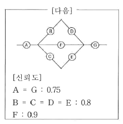
- 0.5427
- 0.6234
- 0.5552
- 0.9740
(정답률: 62%)
22. 전신육체적 작업에 대한 개략적 휴식시간의 산출공식으로 맞는 것은? (단, R은 휴식시간(분), E는 작업의 에너지소비율 (kcal/분)이다.)
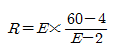
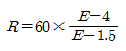
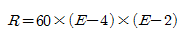
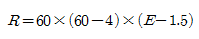
(정답률: 72%)
23. FT도에 사용하는 기호에서 3개의 입력현상 중 임의의 시간에 2개가 발생하면 출력이 생기는 기호의 명칭은?
- 억제 게이트
- 조합 AND 게이트
- 배타적 OR 게이트
- 우선적 AND 게이트
(정답률: 76%)
24. 여러 사람이 사용하는 의자의 좌면높이는 어떤 기준으로 설계하는 것이 가장 적절한가?
- 5% 오금높이
- 50% 오금높이
- 75% 오금높이
- 95% 오금높이
(정답률: 69%)
25. 인간공학의 궁극적인 목적과 가장 관계가 깊은 것은?
- 경제성 향상
- 인간 능력의 극대화
- 설비의 가동율 향상
- 안전성 및 효율성 향상
(정답률: 83%)
26. 위험 및 운전성 검토(HAZOP)에서 사용되는 가아드 워드 중에서 성질상의 감소를 의미하는 것은?
- Part of
- More less
- No/Not
- Other than
(정답률: 62%)
27. 시스템 안전분석 방법 중 예비위험분석(PHA) 단계에서 식별하는 4가지 범주에 속하지 않는 것은?
- 위기생태
- 무시가능상태
- 파국적상태
- 예비조처상태
(정답률: 68%)
28. 첨단 경보기시스템의 고장율은 0이다. 경계의 효과로 조작자 오류율은 0.01t/hr 이며, 인간의 실수율은 균질(homogeneous)한 것으로 가정한다. 또한, 이 시스템의 스위치 조작자는 1시간마다 스위치를 작동해야 하는데 인간오류확률(HEP: Human Error Probability)이 0.001 인 경우에 2시간에서 6시간 사이에 인간-기계 시스템의 신뢰도는 약 얼마인가?
- 0.938
- 0.948
- 0.957
- 0.967
(정답률: 39%)
29. 실내에서 사용하는 습구흑구온도(WBGT: Wet Bulb Globe Temperature) 지수는? (단, NWB 는 자연습구, GT 는 흑구온도, DB 는 건구온도이다.)
- WBGT = 0.6NWB + 0.4GT
- WBGT = 0.7NWB + 0.3GT
- WBGT = 0.6NWB + 0.3GT + 0.1DB
- WBGT = 0.7NWB + 0.2GT + 0.1DB
(정답률: 58%)
30. FTA 에서 특정 조합의 기본사상들이 동시에 결함을 발생하였을 때 정상사상을 일으키는 기본사상의 집합을 무엇이라 하는가?
- cut set
- erroe set
- path set
- success set
(정답률: 74%)
31. 실험실 환경에서 수행하는 인간공학 연구의 장ㆍ단점에 대한 설명으로 맞는것은?
- 변수의 통제가 용이하다.
- 주위 환경의 간섭에 영향 받기 쉽다.
- 실험 참가자의 안전을 확보하기가 어렵다.
- 피실험자의 자연스러운 반응을 기대할 수 있다.
(정답률: 77%)
32. 다음의 그림과 같이 FTA 로 분석된 시스템에서 현재 모든 기본사상에 대한 부품이 고장난 상태이다. 부품 X1부터 부품 X5 까지 순서대로 복구한다면 어느 부품을 수리 완료하는 순간부터 시스템은 정상가동이 되겠는가?
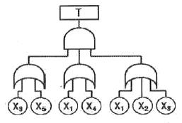
- X1
- X2
- X3
- X4
(정답률: 77%)
33. 특정한 목적을 위해 시각적 암호, 부호 및 기호를 의도적으로 사용할 때에 반드시 고려하여야 할 사항과 가장 거리가 먼 것은?
- 검출성
- 판별성
- 양립성
- 심각성
(정답률: 69%)
34. 산업안전보건법에 따라 유해위험방지계획서의 제출대상 사업은 해당 사업으로서 전기 계약용량이 얼마 이상인 사업을 말하는가?
- 150kW
- 200kW
- 300kW
- 500kW
(정답률: 84%)
35. 국내 규정상 1일 노출회수가 100일 때 최대 음압수준이 몇dB(A)를 초과하는 충격소음에 노출되어서는 아니 되는가?
- 110
- 120
- 130
- 140
(정답률: 46%)
36. 인지 및 인식의 오류를 예방하기 위해 목표와 관련하여 작동을 계획해야 하는데 특수하고 친숙하지 않은 상황에서 발생하며, 부적절한 분석이나 의사결정을 잘못하여 발생하는 오류는?
- 기능에 기초한 행동(Skill-based Behavior)
- 규칙에 기초한 행동(Rule-based Behavior)
- 사고에 기초한 행동(Accident-based Behavior)
- 지식에 기초한 행동(Knowledge-based Behavior)
(정답률: 70%)
37. 기계설비가 설계 사양대로 성능을 발휘하기 위한 적정 윤활의 원칙이 아닌 것은?
- 적량의 규정
- 주유방법의 통일화
- 올바른 윤활법의 채용
- 윤활기간의 올바른 준수
(정답률: 84%)
38. 정보의 촉각적 암호화 방법으로만 구성된 것은?
- 점자, 진동, 온도
- 초인종, 점멸등, 점자
- 신호등, 경보음, 점멸등
- 연기, 온도, 모스(Morse)부호
(정답률: 87%)
39. 화학설비에 대한 안전성 평가방법 중 공장의 입지조건이나 공장 내 배치에 관한 사항은 어느 단계에서 하는가?
- 제1단계 : 관계자료의 작성 준비
- 제2단계 : 정성적 평가
- 제3단계 : 정량적 평가
- 제4단계 : 안전대책
(정답률: 79%)
40. 다음 중 성격이 다른 정보의 제어 유형은?
- action
- selection
- setting
- data entry
(정답률: 52%)
3과목: 기계위험방지기술
41. 크레인의 방호장치에 해당되지 않는 것은?
- 권과방지장치
- 과부하방지장치
- 자동보수장치
- 비상정지장치
(정답률: 84%)
42. 프레스작업에서 재해예방을 위한 재료의 자동송급 또는 자동배출장치가 아닌 것은?
- 롤피더
- 그리퍼피더
- 플라이어
- 셔블 이젝터
(정답률: 68%)
43. 롤러기 급정지장치의 종류가 아닌 것은?
- 어깨조작식
- 손조작식
- 복부조작시
- 무릎조작식
(정답률: 79%)
44. 기계 고장률의 기본 모형이 아닌 것은?
- 초기고장
- 우발고장
- 마모고장
- 수시고장
(정답률: 83%)
45. 와이어로프의 구성요소가 아닌 것은?
- 소선
- 클립
- 스트랜드
- 심강
(정답률: 65%)
46. 이상온도, 이상기압, 과부하 등 기계의 부하가 안전 한계치를 초과하는 경우에 이를 감지하고 자동으로 안전상태가 되도록 조정하거나 기계의 작동을 중지시키는 방호장치는?
- 감지형 방호장치
- 접근거부형 방호장치
- 위치제한형 방호장치
- 접근방호형 방호장치
(정답률: 81%)
47. 연삭용 숫돌의 3요소가 아닌 것은?
- 조직
- 입자
- 결합제
- 기공
(정답률: 45%)
48. 산업용 로봇에 사용되는 안전 매트의 종류 및 일반구조에 관한 설명으로 틀린 것은?
- 안전매트의 종류는 연결사용 가능여부에 따라 단일 감지기와 복합 감기기가 있다.
- 단선경보장치가 부착되어 있어야 한다.
- 감응시간을 조절하는 장치가 부착되어 있어야 한다.
- 감응도 조절장치가 있는 경우 봉인되어 있어야 한다.
(정답률: 63%)
49. 오스테나이트 계역 스테인리스 강판의 표면 균열발생을 검출하기 곤란한 비파괴 검사방법은?
- 염료침투검사
- 자분검사
- 와류검사
- 형광침투검사
(정답률: 53%)
50. 일반구조용 압연강판(SS400)으로 구조물을 설계할 때 허용응력을 10kg/mm2으로 정하였다. 이 때 적용된 안전율은?
- 2
- 4
- 6
- 8
(정답률: 74%)
51. 회전중인 연삭숫돌이 근로자에게 위험을 미칠 우려가 있을 시 덮개를 설치하여야 할 연삭숫돌의 최소 지름은?
- 지름이 5cm 이상인 것
- 지름이 10cm 이상인 것
- 지름이 15cm 이상인 것
- 지름이 20cm 이상인 것
(정답률: 67%)
52. 동력프레스기의 No hand Die 방식의 안전대책으로 틀린 것은?
- 안전금형을 부착한 프레스
- 양수조작식 방호방치의 설치
- 안전울을 부착한 프레스
- 전용프레스의 도입
(정답률: 58%)
53. 다음 중 선반작업에서 안전한 방법이 아닌 것은?
- 보안경 착용
- 칩 제거는 브러쉬를 사용
- 작동 중 수시로 주유
- 운전 중 백기어 사용금지
(정답률: 86%)
54. 아세틸렌용접장치에 관한 설명 중 틀린 것은?
- 아세틸렌 발생기로부터 5m 이내, 발생기실로부터 3m 이내에는 흡연 및 화기사용을 금지한다.
- 역화가 일어나면 산소밸브를 즉시 잠그고 아세틸렌 밸브를 잠근다.
- 아세틸렌 용기는 뉘어서 사용한다.
- 건식안전기에는 차단방법에 따라 소결급속식과 우회로식이 있다.
(정답률: 84%)
55. 물질 내 실제 입자의 진동이 규칙적일 경우 주파수의 단위는 헤르츠(Hz)를 사용하는데 다음 중 통상적으로 초음파는 몇 Hz 이상의 음파를 말하는가?
- 10000
- 20000
- 50000
- 100000
(정답률: 62%)
56. 보일러 과열의 원인이 아닌 것은?
- 수관과 본체의 청소 불량
- 관수 부족 시 보일러의 가동
- 드럼내의 물의 감소
- 수격작용이 발생될 때
(정답률: 71%)
57. 프레스 양수조작식 방호장치에서 누름버튼 상호간 최소 내측거리로 옳은 것은?
- 200 mm 이상
- 250 mm 이상
- 300 mm 이상
- 400 mm 이상
(정답률: 66%)
58. 다음 중 지브가 없는 크레인의 정격하중에 관한 정의로 옳은 것은?
- 짐을 싣고 상승할 수 있는 최대하중
- 크레인의 구조 및 재료에 따라 들어올릴수 있는 최대하중
- 권상하중에서 훅, 그랩 또는 버킷 등 달기구의 중량에 상당하는 하중을 뺀 하중
- 짐을 싣지않고 상승할 수 있는 최대하중
(정답률: 75%)
59. 안전색채와 기계장비 또는 배관의 연결이 잘못된 것은?
- 시동스위치 - 녹색
- 급정지스위치 - 황색
- 고열기계 - 회청색
- 증기배관 - 암적색
(정답률: 75%)
60. 지름이 D(mm)인 연삭기 숫돌의회정수가 N(rpm)일 때 숫돌의 원주속도(m/min)를 옳게 표시한 식은?
- πDN/1000
- πDN
- πDN/60
- DN/1000
(정답률: 81%)
4과목: 전기위험방지기술
61. 다음 설명과 가장 관계가 깊은 것은?
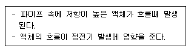
- 충돌대전
- 박리대전
- 유동대전
- 분출대전
(정답률: 85%)
62. 분진폭발 방지대책으로 거리가 먼 것은?
- 작업장 등은 분진이 퇴적하지 않는 형상으로 한다.
- 분진 취급 장치에는 유효한 집진 장치를 설치한다.
- 분체 프로세스의 장치는 밀폐화하고 누설이 없도록 한다.
- 분진 폭발의 우려가 있는 작업장에는 감독자를 상주 시킨다.
(정답률: 81%)
63. 피부의 전기저항 연구에 의하면 인체의 피부 중 1~2mm2 정도의 적은 부분은 전기 자극에 의해 신경이 이상적으로 흥분하여 다량의 피부지방이 분비되기 때문에 그 부분의 전기저항이 1/10 정도로 적어지는 피전점(皮電点)이 존재한다고 한다. 이러한 피전점이 존재하는 부분은?
- 머리
- 손등
- 손바닥
- 발바닥
(정답률: 62%)
64. 코로나 방전이 발생할 경우 공기 중에 생성되는 것은?
- O2
- O3
- N2
- N3
(정답률: 79%)
65. 고압 및 특고압 전로에 시설하는 피뢰기의 설치장소로 잘못된 곳은?
- 가공전선로와 지중전선로가 접속되는 곳
- 발전소, 변전소의 가공전선 인입구 및 인출구
- 가공전선로에 접속하는 배전용 변압기의 저압측
- 특고압 가공전선로로부터 공급 받는 수용장소의 인입구
(정답률: 77%)
66. 전기설비의 방폭구조의 종류가 아닌 것은?
- 근본 방폭구조
- 압력 방폭구조
- 안전증 방폭구조
- 본질안전 방폭구조
(정답률: 77%)
67. 대지를 접지로 이용하는 이유 중 가장 옳은 것은?
- 대지는 토양의 주성분이 규소(SiO2)이므로 저항이 영(0)에 가깝다.
- 대지는 토양의 주성분인 산화알미늄(Al2O3)이므로 저항이 영(0)에 가깝다.
- 대지는 철분을 많이 포함하고 있기 때문에 전류를 잘 흘릴 수 있다.
- 대지는 넓어서 무수한 전류통로가 있기 때문에 저항이 영(0)에 가깝다.
(정답률: 75%)
68. 전기작업 안전의 기본 대책에 해당되지 않는 것은?
- 취급자의 자세
- 전기설비의 품질 향상
- 전기시설의 안전관리 확립
- 유지보수를 위한 부품 재사용
(정답률: 87%)
69. 폴리에스터, 나일론, 아크릴 등의 섬유에 정전기 대전방지 성능이 특히 효과가 있고, 섬유에의 균일 부착성과 열 안전성이 양호한 외부용 일시성 대전방지제로 옳은 것은?
- 양ion계 활성제
- 음ion계 활성제
- 비ion계 활성제
- 양성ion계 활성제
(정답률: 70%)
70. 200 A의 전류가 흐르는 단상 전로의 한 선에서 누전되는 최소 전류(mA)의 기준은?
- 100
- 200
- 10
- 20
(정답률: 60%)
71. 반도체 취급 시 정전기로 인한 재해 방지대책으로 거리가 먼 것은?
- 작업자 정전화 착용
- 작업자 제전복 착용
- 부도체 작업대 접지 실시
- 작업장 도전성 매트 사용
(정답률: 57%)
72. 50kW, 60Hz 3상 유도전동기가 380 V 전원에 접속된 경우 흐르는 전류는 약 몇 A 인가? (단, 역률은 80%이다.)
- 82.24
- 94.96
- 116.30
- 164.47
(정답률: 49%)
73. 방폭지역에 전기기기를 설치할 때 그 위치로 적당하지 않은 것은?
- 운전ㆍ조작ㆍ조정이 편리한 위치
- 수분이나 습기에 노출되지 않는 위치
- 정비에 필요한 공간이 확보되는 위치
- 부식성 가스발산구 주변 검지가 용이한 위치
(정답률: 76%)
74. 전자기기의 케이스를 전폐구조로 하며 접합면에는 일정치 이상의 깊이를 갖는 패킹을 사용하여 분진이 용기 내로 침입하지 못하도록 한 방폭 구조는?(오류 신고가 접수된 문제입니다. 반드시 정답과 해설을 확인하시기 바랍니다.)
- 보통방진 방폭구조
- 분진특수 방폭구조
- 특수방진 방폭구조
- 밀폐방진 방폭구조
(정답률: 52%)
75. 화재대비 비상용 동력 설비에 포함되지 않는 것은?
- 소화 펌프
- 급수 펌프
- 배연용 송풍기
- 스프링클러 펌프
(정답률: 52%)
76. Q=2×10-7C으로 대전하고 있는 반경 25cm 도체구의 전위는 약 몇 kV 인가?
- 7.2
- 12.5
- 14.4
- 25
(정답률: 39%)
77. 전기설비 화재의 경과 병 재해 중 가장 빈도가 높은 것은?
- 단락(합선)
- 누전
- 접촉부 과열
- 정전기
(정답률: 68%)
78. 그림과 같은 전기설비에서 누전사고가 발생 하여 인체가 전기설비의 외함에 접촉하였을 때 인체통과 전류는 약 몇 mA 인가?
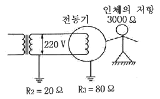
- 43.25
- 51.24
- 58.36
- 61.68
(정답률: 49%)
79. 전기누전 화재경보기의 시험 방법에 속하지 않는 것은?
- 방수시험
- 전류특성시험
- 접지저항시험
- 전압특성시험
(정답률: 39%)
80. 정전작업을 하기 위한 작업전 조치사항이 아닌 것은?
- 단락접지 상태를 수시로 확인
- 전로의 충전 여부를 검전기로 확인
- 전력용 커패시터, 전력케이블 등 잔류전하방전
- 개로개폐기의 잠금장치 및 통전금지 표지판 설치
(정답률: 63%)
5과목: 화학설비위험방지기술
81. 다음 중 송풍기의 상사법칙으로 옳은 것은? (단, 송풍기의 크기와 공기의 비중량은 일정하다.)
- 풍압은 회전수에 반비례한다.
- 풍량은 회전수의 제곱에 비례한다.
- 소요동력은 회전수의 세제곱에 비례한다.
- 풍압과 동력은 절대온도에 비례한다.
(정답률: 56%)
82. 다음 중 가연성 가스의 연소 형태에 해당하는 것은?
- 분해연소
- 자기연소
- 표면연소
- 확산연소
(정답률: 73%)
83. 4% NaOH 수용액과 10% NaOH 수용액을 반응기에 혼합하여 6% 100kg의 NaOH 수용액을 만들려면 각각 몇 kg의 NaOH 수용액이 필요한가?
- 4% NaOH 수용액 : 50, 10% NaOH 수용액 : 50
- 4% NaOH 수용액 : 56.2, 10% NaOH 수용액 : 43.8
- 4% NaOH 수용액 : 66.67, 10% NaOH 수용액 : 33.33
- 4% NaOH 수용액 : 80, 10% NaOH 수용액 : 20
(정답률: 66%)
84. 일산화탄소에 대한 설명으로 틀린 것은?
- 무색ㆍ무취의 기체이다.
- 염소와는 촉매 존재하에 반응하여 포스겐이 된다.
- 인체 내의 헤모글로빈과 결합하여 산소운반기능을 저하시킨다.
- 불연성가스로서, 허용농도가 10ppm이다.
(정답률: 73%)
85. 폭발하한계를 L, 폭발상항계를 U라 할 경우 다음 중 위험도 (H)를 옳게 나타낸 것은?
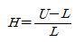
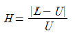
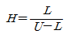
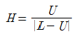
(정답률: 81%)
86. 산업안전보건법령상 특수화학설비 설치시 반드시 필요한 장치가 아닌 것은?
- 원재료 공급의 긴급차단장치
- 즉시 사용할 수 있는 예비동력원
- 화재시 긴급대응을 위한 물분무소화장치
- 온도계ㆍ유량계ㆍ등의 계측장치
(정답률: 53%)
87. 다음 중 냉각소화에 해당하는 것은?
- 튀김 기름이 인화되었을 때 싱싱한 야채를 넣어 소화한다.
- 가연성 기체의 분출 화재시 주 밸브를 닫아서 연료 공급을 차단한다.
- 금속화재의 겨우 불활성 물질로 가연물을 덮어 미연소 부분과 분리한다.
- 촛불을 입으로 불어서 끈다.
(정답률: 81%)
88. 다음 중 Flashover의 방지(지연)대책으로 가장 적정한 것은?
- 출입구 개방전 외부 공기 유입
- 실내의 가열
- 가연성 건축자재 사용
- 개구부 제한
(정답률: 57%)
89. 다음 중 분진이 발화 폭발하기 위한 조건으로 거리가 먼 것은?
- 불연성 성질
- 미분상태
- 점화원의 존재
- 지연성가스 중에서의 교반과 운동
(정답률: 79%)
90. 관부속품 중 유로를 차단할 때 사용되는 것은?
- 유니온
- 소켓
- 플러그
- 엘보우
(정답률: 67%)
91. 공업용 가스의 용기가 주황색으로 도색되어 있을 때 용기 안에는 어떠한 가스가 들어있는가?
- 수소
- 질소
- 암모니아
- 아세틸렌
(정답률: 65%)
92. 인화성액체 위험물을 액체상태로 저장하는 저장탱크를 설치할 때, 위험물질이 누출되어 확산되는 것을 방지하기 위하여 설치햐야 하는 것은?
- 방유제
- 유막시스템
- 방폭제
- 수막시스템
(정답률: 75%)
93. 다음 중 산업안전보건법령상 공정안전보고서의 안전운전 계획에 포함되지 않는 항목은?
- 안전작업허가
- 안전운전지침서
- 가동 전 점검지침
- 비상조치계획에 따른 교육계획
(정답률: 65%)
94. 위험물안전관리법령에 의한 위험물 분류에서 제1류 위험물은 산화성고체이다. 다음 중 산화성 고체 위험물에 해당하는 것은?
- 과염소산칼륨
- 황린
- 마그네슘
- 나트륨
(정답률: 71%)
95. 다음 중 Halon 2402 의 화학식으로 옳은 것은?
- C2I4Br2
- C2F4Br2
- C2Cl4Br2
- C2I4Cl2
(정답률: 77%)
96. 다음 중 펌프의 사용 시 공동현상(cavitation)을 방지하고자 할 때의 조치사항으로 틀린 것은?
- 펌프의 회전수를 높인다.
- 흡입비 속도를 작게 한다.
- 펌프의 흡입관의 두(head) 손실을 줄인다.
- 펌프의 설치높이를 낮추어 흡입양정을 짧게 한다.
(정답률: 77%)
97. 다음 중 산업안전보건기준에 관한 규칙에서 규정한 위험물질에 종류에서 “물반응성 물질 및 인화성 고체”에 해당하는 것은?
- 질산에스테르류
- 니트로화합물
- 칼륨ㆍ나트륨
- 니트로소화합물
(정답률: 77%)
98. 다음 중 C급 화재에 해당하는 것은?
- 급속화재
- 전기화재
- 일반화재
- 유류화재
(정답률: 84%)
99. 다음 중 인화점이 가장 낮은 물질은?
- 등유
- 아세톤
- 이황화탄소
- 아세트산
(정답률: 71%)
100. 다음 중 공기 속에서의 폭발하한계(vol%)값의 크기가 가장 작은 것은?
- H2
- CH4
- CO
- C2H2
(정답률: 38%)
6과목: 건설안전기술
101. 신품의 추락방지망 중 그물코의 크기 10cm인 매듭방망의 인장강도 기준으로 옳은 것은?
- 110kg 이상
- 200kg 이상
- 360kg 이상
- 400kg 이상
(정답률: 79%)
102. 재해사고를 방지하기 위하여 크레인에 설치된 방호장치와 거리가 먼 것은?
- 공기정화장치
- 비상정지장치
- 제동장치
- 권과방지장치
(정답률: 84%)
103. 구조물 해체작업으로 사용되는 공법이 아닌 것은?
- 압쇄공법
- 잭공법
- 절단공법
- 진공공법
(정답률: 68%)
104. 건립 중 강풍에 의한 풍압 등 외압에 대한 내력이 설계에 고려되었는지 확인하여야 하는 철골구조물의 기준으로 옳지 않은 것은?
- 높이 20m 이상의 구조물
- 구조물의 폭과 높이의 비가 1:4 이상인 구조물
- 이음부가 공장 제작인 구조물
- 연면적당 철골량이 50kg/m2 이하인 구조물
(정답률: 68%)
1⑤. 산업안전보건관리비의 효율적인 집행을 위하여 고용노동부장관이 정할 수 있는 기준에 해당되지 않는 것은?
- 안전ㆍ보건에 관한 협의체 구성 및 운영
- 공사의 진척 정도에 따른 사용기준
- 사업의 규모별 사용방법 및 구체적인 내용
- 사업의 종류별 사용방법 및 구체적인 내용
(정답률: 53%)
106. 항타기 또는 항발기에 사용되는 권상용와이어로프의 안전계수는 최소 얼마 이상이어야 하는가?
- 3
- 4
- 5
- 6
(정답률: 77%)
107. 철골보 인양 시 준수해야 할 사항으로 옳지 않은 것은?
- 인양 와이어로프의 매달기 각도는 양변 60°를 기준으로 한다.
- 크램프로 부재를 체결할 때는 크램프의 정격용량 이상 매달지 않아야 한다.
- 크램프는 부재를 수평으로 하는 한 곳의 위치에만 사용하여야 한다.
- 인양 와이어로프는 후크의 중심에 걸어야 한다.
(정답률: 76%)
108. 시스템 동바리를 조립하는 경우 수직재와 받침철물 연결부의 겹침길이 기준으로 옳은 것은?
- 받침철물 전체길이의 1/2 이상
- 받침철물 전체길이의 1/3 이상
- 받침철물 전체길이의 1/4 이상
- 받침철물 전체길이의 1/5 이상
(정답률: 76%)
109. 토질시험 중 액체 상태의 흙이 건조되어 가면서 약성, 소성, 반고체, 고체 상태의 경계선과 관련된 시험의 명칭은?
- 아터버그 한계시험
- 압밀 시험
- 삼축압축시험
- 투수시험
(정답률: 49%)
110. 유해ㆍ위험방지계획서응 제출해야 할 대상 공사의 조건으로 옳지 않은 것은?
- 터널 건설등의 공사
- 최대지간 길이가 50m이상인 교량건설등 공사
- 다목적댐ㆍ발전용 댐 및 저수용량 2천만톤이상의 용수전용댐, 지방상수도 전용 댐 건설 등의 공사
- 깊이가 5m 이상인 굴착공사
(정답률: 82%)
111. 다음 기계 중 양중기에 포함되지 않는 것은?
- 리프트
- 곤돌라
- 크레인
- 트롤리 컨베이어
(정답률: 76%)
112. 콘크리트 타설작업을 하는 경우에 준수해야할 사항으로 옳지 않은 것은?
- 당일의 작업을 시작하기 전에 해당 작업에 관한 거푸집동바리 등의 변형ㆍ변위 및 지반의 침하 유무 등을 점검하고 이상이 있으면 보수할 것
- 작업 중에는 거푸집동바리등의 변형ㆍ변위 및 침하 유무 등을 감시할 수 있는 감시자를 배치하여 이상이 있으면 작업을 빠른 시간 내 우선 완료하고 근로자를 대피시킬 것
- 콘크리트 타설작업 시 거푸집붕괴의 위험이 발생할 우려가 있으면 충분한 보강조치를 할 것
- 콘크리트 타설하는 경우에는 편심이 발생하지 않도록 골고루 분산하여 타설할 것
(정답률: 82%)
113. 차량계 건설기계를 사용하여 작업하고자 할 때 작업계획서에 포함되어야 할 사항에 해당되지 않는 것은?
- 사용하는 차량계 건설기계의 종류 및 성능
- 차량계 건설기계의 운행경로
- 차량계 건설기계에 의한 작업방법
- 차량계 건설기계의 유지보수방법
(정답률: 71%)
114. 기계가 위치한 지면보다 높은 장소의 땅을 굴착하는데 적합하며 산지에서의 토공사 및 암반으로부터의 점토질까지 굴착할 수 있는 건설장비의 명칭은?
- 파워쇼벨
- 불도저
- 파일드라이버
- 크레인
(정답률: 82%)
115. 지표면에서 소정의 위치까지 파내려간 후 구조물을 축조하고 되메운 후 지표면을 원상태로 복구시키는 공법은?
- NATM 공법
- 개착식 터널공법
- TBN 공법
- 침매공법
(정답률: 48%)
116. 단관비계를 조립하는 경우 벽이음 및 버팀을 설치할 때의 수평방향 조립간격 기준으로 옳은 것은?
- 3m
- 5m
- 6m
- 10m
(정답률: 71%)
117. 산업안전보건기준에 관한 규칙에 따른 암반 중 풍화함 굴착 시 굴착면의 기울기 기준으로 옳은 것은?(2021년 11월 19일 변경된 규정 적용)
- 1 : 1.5
- 1 : 1.1
- 1 : 1.0
- 1: 0.5
(정답률: 68%)
118. 흙막이 가시설 공사시 사용되는 각 계측기 설치 목적으로 옳지 않은 것은?
- 지표침하계 - 지표면 침하량 측정
- 수위계 - 지반 내 지하수위의 변화 측정
- 하중계 - 상부 적재하중 변화 측정
- 지중경사계 - 지중의 수평 변위량 측정
(정답률: 68%)
119. 철골작업시철골부재에서 근로자가 수직방향으로 이동하는 경우에 설치하여야 하는 고정된 승강로의 최소 답단 간격은 얼마 이내인가?
- 20cm
- 25cm
- 30cm
- 40cm
(정답률: 58%)
120. 콘크리트 타설시 거푸집 측압에 대한 설명으로 옳지 않은 것은?
- 기온이 높을수록 측압은 크다.
- 타설속도가 클수록 측압은 크다.
- 슬럼프가 클수록 측압은 크다.
- 다짐이 과할수록 측압은 크다.
(정답률: 73%)